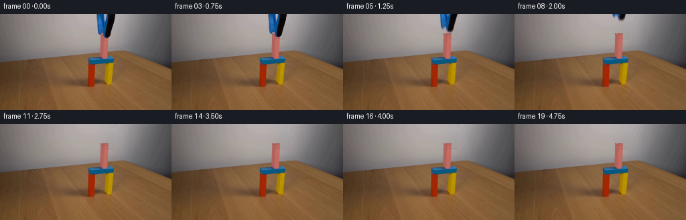
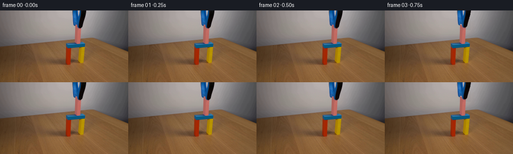

CODING AGENTS AS PIXEL WORLD MODELS
traex/GPT-5.6-Sol · 0172
点击播放 · 原生 RGB 像素
逐轮保存的候选
回放视频、检查图与代码变化。
每份候选均可单独播放。实际图片检查记录在下方工具轨迹中。
候选 01播放与检查图
点击播放 · 原生 RGB 像素
展开代码变化
--- 上一保存版本
+++ 本次保存版本
@@ -0,0 +1,150 @@
+from pathlib import Path
+import numpy as np
+from PIL import Image
+import artifact_io
+
+CASE_DIR = Path(__file__).resolve().parent
+
+
+def smoothstep(t):
+ t = np.clip(t, 0.0, 1.0)
+ return t * t * (3.0 - 2.0 * t)
+
+
+def make_background_plate(src):
+ """Remove the overhead gripper from the wall, retaining its fine tonal gradient."""
+ plate = src.astype(np.float32).copy()
+ rng = np.random.default_rng(172)
+
+ # The gripper only obscures this compact part of the neutral back wall.
+ # Interpolate per scanline between nearby, unquestionably visible wall samples.
+ for y in range(0, 39):
+ lx0, lx1 = 137, 143
+ rx0, rx1 = 172, 179
+ left = np.median(src[y, lx0:lx1].astype(np.float32), axis=0)
+ right = np.median(src[y, rx0:rx1].astype(np.float32), axis=0)
+ for x in range(143, 172):
+ u = (x - 142.0) / 30.0
+ # Very slightly curved interpolation follows the soft studio illumination.
+ c = left * (1.0 - u) + right * u
+ plate[y, x] = c
+
+ # Restore a restrained photographic grain. It is deterministic and only affects
+ # the newly revealed patch, avoiding a conspicuously synthetic smooth area.
+ noise = rng.normal(0.0, 0.48, size=(39, 29, 1)).astype(np.float32)
+ plate[0:39, 143:172] += noise
+
+ # Reconstruct the narrow upper portion of the pink wooden block that was hidden
+ # behind the jaws. Lower rows are sampled from the actual photographed block.
+ ref = src[36:43, 150:162].astype(np.float32).mean(axis=0)
+ for y in range(29, 36):
+ # The first row is a subtly darker top edge; subsequent rows become the face.
+ top_factor = 0.91 + 0.015 * (y - 29)
+ for x in range(150, 162):
+ c = ref[x - 150] * top_factor
+ if y == 29:
+ c *= 0.94
+ plate[y, x] = c
+
+ # Reapply all genuinely visible pink pixels from the source around the grip,
+ # preserving photographed highlights, antialiasing, and contact texture.
+ r = src[:, :, 0].astype(np.int16)
+ g = src[:, :, 1].astype(np.int16)
+ b = src[:, :, 2].astype(np.int16)
+ visible_pink = (r > 145) & (r - g > 27) & (r - b > 9) & (b > 58)
+ yy, xx = np.indices((144, 256))
+ visible_pink &= (yy >= 29) & (yy <= 63) & (xx >= 149) & (xx <= 162)
+ plate[visible_pink] = src[visible_pink]
+
+ return np.clip(plate, 0, 255)
+
+
+def make_tool_mask():
+ """Silhouette of the blue/black grabber, including its softly imaged boundary."""
+ mask = np.zeros((144, 256), dtype=np.float32)
+ for y in range(0, 29):
+ # The photographed shaft tapers gently toward its gripping end.
+ left = 144 + (1 if y >= 21 else 0) + (1 if y >= 28 else 0)
+ right = int(round(172 - 0.25 * y))
+ mask[y, left:right + 1] = 1.0
+
+ # Two short jaws flank the block at the bottom of the tool.
+ jaw_rows = {
+ 29: ((146, 150), (154, 165)),
+ 30: ((147, 150), (154, 165)),
+ 31: ((148, 150), (154, 165)),
+ 32: ((149, 150), (154, 164)),
+ 33: ((149, 150), (154, 164)),
+ 34: ((149, 150), (155, 163)),
+ 35: ((155, 162),),
+ }
+ for y, runs in jaw_rows.items():
+ for left, right in runs:
+ mask[y, left:right + 1] = 1.0
+ return mask
+
+
+def shifted_tool_frame(plate, src, mask, dy):
+ """Composite the photographed gripper translated vertically by floating-point dy."""
+ h, w = mask.shape
+ out = plate.copy()
+ # Linear subpixel resampling in y. Source pixels already contain the camera's
+ # natural edge antialiasing, so no artificial outlines are introduced.
+ for y_dst in range(h):
+ y_src = y_dst - dy
+ y0 = int(np.floor(y_src))
+ f = y_src - y0
+ if y0 < 0 or y0 >= h:
+ continue
+ y1 = min(y0 + 1, h - 1)
+ a0 = mask[y0]
+ a1 = mask[y1]
+ alpha = a0 * (1.0 - f) + a1 * f
+ active = alpha > 1e-5
+ if not np.any(active):
+ continue
+ color = src[y0].astype(np.float32) * (1.0 - f) + src[y1].astype(np.float32) * f
+ a = alpha[active, None]
+ out[y_dst, active] = out[y_dst, active] * (1.0 - a) + color[active] * a
+ return out
+
+
+def generate():
+ src = np.asarray(Image.open(CASE_DIR / "first_frame.png").convert("RGB"), dtype=np.uint8)
+ assert src.shape == (144, 256, 3)
+ plate = make_background_plate(src)
+ tool_mask = make_tool_mask()
+
+ frames = [src.copy()]
+ # Brief initial hold communicates careful placement. Then the gripper eases up,
+ # clearing the block by about 3 seconds; the stable assembly remains on screen.
+ for i in range(1, 20):
+ if i <= 2:
+ frame = src.astype(np.float32)
+ elif i <= 12:
+ t = (i - 2) / 10.0
+ dy = -41.0 * smoothstep(t)
+ # Small shutter integration gives physically plausible motion blur at 4 fps.
+ if 4 <= i <= 10:
+ prev_t = (i - 2.35) / 10.0
+ next_t = (i - 1.65) / 10.0
+ d0 = -41.0 * smoothstep(prev_t)
+ d1 = -41.0 * smoothstep(next_t)
+ samples = [shifted_tool_frame(plate, src, tool_mask, d)
+ for d in (d0, dy, d1)]
+ frame = (samples[0] + 2.0 * samples[1] + samples[2]) / 4.0
+ else:
+ frame = shifted_tool_frame(plate, src, tool_mask, dy)
+ else:
+ frame = plate.copy()
+ frames.append(np.clip(np.rint(frame), 0, 255).astype(np.uint8))
+
+ frames = np.stack(frames, axis=0).astype(np.uint8)
+ # Contract-critical identity check.
+ assert np.array_equal(frames[0], src)
+ assert frames.shape == (20, 144, 256, 3)
+ artifact_io.save(frames, CASE_DIR)
+
+
+if __name__ == "__main__":
+ generate()
候选 02播放与检查图
点击播放 · 原生 RGB 像素


展开代码变化
--- 上一保存版本
+++ 本次保存版本
@@ -70,13 +70,13 @@
# Two short jaws flank the block at the bottom of the tool.
jaw_rows = {
- 29: ((146, 150), (154, 165)),
- 30: ((147, 150), (154, 165)),
- 31: ((148, 150), (154, 165)),
- 32: ((149, 150), (154, 164)),
- 33: ((149, 150), (154, 164)),
- 34: ((149, 150), (155, 163)),
- 35: ((155, 162),),
+ 29: ((146, 149), (154, 165)),
+ 30: ((147, 149), (154, 165)),
+ 31: ((154, 165),),
+ 32: ((154, 164),),
+ 33: ((155, 164),),
+ 34: ((155, 163),),
+ 35: ((156, 162),),
}
for y, runs in jaw_rows.items():
for left, right in runs:
可观测工具轨迹
实际执行的命令与返回图片。
命令 1exit 0
/bin/bash -lc "cat prompt.txt && printf '\\n--- GENERATION_RULES ---\\n' && cat GENERATION_RULES.md"
命令 2exit 0
/bin/bash -lc "find . -maxdepth 2 -type f -printf '%p\\n' | sort && printf '\\n--- dimensions ---\\n' && python3 - <<'PY'
from PIL import Image
im=Image.open('first_frame.png')
print(im.mode, im.size)
PY"命令 3exit 0
/bin/bash -lc "python3 - <<'PY'
from PIL import Image
import numpy as np
from collections import Counter
im=np.array(Image.open('first_frame.png'))
print('stats mean/std/min/max', im.reshape(-1,3).mean(0), im.reshape(-1,3).std(0), im.reshape(-1,3).min(0), im.reshape(-1,3).max(0))
# dominant exact colors
for c,n in Counter(map(tuple,im.reshape(-1,3))).most_common(30): print(n,c)
PY"命令 4exit 0
/bin/bash -lc "python3 - <<'PY'
from PIL import Image
import numpy as np
im=np.array(Image.open('first_frame.png'))
# 4x4 sample average grid, represent dominant hue symbols and luma
for yy in range(0,144,4):
s=''
for xx in range(0,256,4):
p=im[yy:yy+4,xx:xx+4].mean((0,1)); r,g,b=p
if max(p)-min(p)<18: c='.' if p.mean()>180 else ':' if p.mean()>100 else '#'
elif r>g*1.3 and r>b*1.25: c='R'
elif r>b*1.18 and g>b*1.1: c='Y'
elif b>r*1.25 and b>g*1.15: c='B'
elif g>r*1.15 and g>b*1.1: c='G'
elif r>b*1.15 and b>g*1.05: c='P'
elif b>r*1.08: c='b'
else: c='?'
s+=c
print(f'{yy:03d} {s}')
PY"命令 5exit 0
/bin/bash -lc "python3 - <<'PY'
import numpy as np
from PIL import Image
from scipy.ndimage import label
im=np.array(Image.open('first_frame.png')).astype(float)/255
mx=im.max(2); mn=im.min(2); sat=(mx-mn)/(mx+1e-6)
# hsv-ish masks
r,g,b=im.transpose(2,0,1)
masks={
'blue':(b>r*1.25)&(b>g*1.1)&(b>0.18),
'pink':(r>g*1.25)&(r>b*1.05)&((r-b)<.3)&(r>.3),
'red':(r>g*1.35)&(r>b*1.25),
'yellow':(r>b*1.3)&(g>b*1.25)&(r/g<1.5),
'green':(g>r*1.15)&(g>b*1.1),
'dark':mx<.25,
'saturated':sat>.3,
}
for name,m in masks.items():
lab,n=label(m)
comps=[]
for i in range(1,n+1):
yy,xx=np.where(lab==i); z=len(xx)
if z>=5: comps.append((z,(xx.min(),yy.min(),xx.max(),yy.max()),np.mean(im[yy,xx],axis=0)))
print('\\n',name,'total',m.sum())
for x in sorted(comps,reverse=True)[:20]: print(x)
PY"命令 6exit 0
/bin/bash -lc "python3 - <<'PY'
import numpy as np
from PIL import Image
from scipy.cluster.vq import kmeans2
im=np.array(Image.open('first_frame.png'))
# kmeans colors lab? rgb
np.random.seed(3)
pix=im.reshape(-1,3).astype(float)
cent,lab=kmeans2(pix,18,minit='++',iter=40)
order=np.argsort(np.bincount(lab))[::-1]
for oi in order:
m=lab.reshape(144,256)==oi; ys,xs=np.where(m)
print('%2d n=%5d rgb=%s bbox=%s'%(oi,m.sum(),np.round(cent[oi]).astype(int),(xs.min(),ys.min(),xs.max(),ys.max())))
# central avg table each 5x5 at 5 grid; print raw tuples
print('\\nCENTRAL 5px means y0:110, x100:205')
for y in range(0,111,5):
vals=[]
for x in range(100,206,5):
v=im[y:y+5,x:x+5].mean((0,1)).round().astype(int)
vals.append('%02x%02x%02x'%tuple(v))
print('%3d'%y,' '.join(vals))
PY"命令 7exit 0
/bin/bash -lc "python3 - <<'PY'
from PIL import Image
import numpy as np
im=np.array(Image.open('first_frame.png')).astype(int)
# symbols per 2x2, central region
for y in range(0,82,2):
s=''
for x in range(120,191,2):
r,g,b=im[y:y+2,x:x+2].mean((0,1)); lum=(r+g+b)/3
# categories tuned
if b-r>35 and b-g>15: c='B' # blue
elif r-g>35 and r-b<80 and r>120: c='P' # pink
elif r-g>60 and r-b>70: c='R'
elif r-b>80 and g-b>55: c='Y'
elif lum<35: c='K'
elif max(r,g,b)-min(r,g,b)<15: c='.' if lum>145 else ':' if lum>90 else '#'
elif b-r>12: c='b'
elif r-b>25 and y>52: c='w'
else:c='?'
s+=c
print(f'{y:02d} {s}')
PY"命令 8exit 0
/bin/bash -lc 'cat artifact_io.py'
命令 9exit 0
/bin/bash -lc "python3 - <<'PY'
from PIL import Image
import numpy as np
im=np.array(Image.open('first_frame.png')).astype(int)
for y in range(0,81):
s=''
for x in range(125,181):
r,g,b=im[y,x]; lum=(r+g+b)/3
if b-r>35 and b-g>15 and b>60:c='B'
elif r-g>25 and r-b<90 and r>135:c='P'
elif r-g>50 and r-b>60:c='R'
elif r-b>70 and g-b>50:c='Y'
elif lum<40:c='K'
elif max(r,g,b)-min(r,g,b)<15:c='.' if lum>145 else ':' if lum>95 else '#'
elif b-r>10:c='b'
elif r-b>20 and y>50:c='w'
else:c='?'
s+=c
print(f'{y:02d} {s}')
PY"命令 10exit 0
/bin/bash -lc "python3 - <<'PY'
import numpy as np
from PIL import Image
im=np.array(Image.open('first_frame.png')).astype(int)
r,g,b=im.transpose(2,0,1)
blue=(b>r+30)&(b>g+15)&(b>65)
black=(np.max(im,2)<65)
pink=(r>135)&(r>g+25)&(r>b+15)&(b>55)
for y in range(0,40):
def runs(m):
xs=np.where(m[y,125:185])[0]+125
if len(xs)==0:return '-'
q=[]; st=pr=xs[0]
for x in xs[1:]:
if x>pr+1:q.append((st,pr));st=x
pr=x
q.append((st,pr));return ','.join('%d-%d'%z for z in q)
print(y,'B',runs(blue),'K',runs(black),'P',runs(pink))
PY"命令 11exit 0
/bin/bash -lc "python3 - <<'PY'
from PIL import Image
import numpy as np
im=np.array(Image.open('first_frame.png'))
for y in list(range(25,41))+list(range(58,66)):
print('\\ny',y)
for x in range(143,172):
print('%d:%02x%02x%02x'%(x,*im[y,x]),end=' ')
print()
PY"命令 12exit 0
/bin/bash -lc "cat > generate.py <<'PY'
from pathlib import Path
import numpy as np
from PIL import Image
import artifact_io
CASE_DIR = Path(__file__).resolve().parent
def smoothstep(t):
t = np.clip(t, 0.0, 1.0)
return t * t * (3.0 - 2.0 * t)
def make_background_plate(src):
\"\"\"Remove the overhead gripper from the wall, retaining its fine tonal gradient.\"\"\"
plate = src.astype(np.float32).copy()
rng = np.random.default_rng(172)
# The gripper only obscures this compact part of the neutral back wall.
# Interpolate per scanline between nearby, unquestionably visible wall samples.
for y in range(0, 39):
lx0, lx1 = 137, 143
rx0, rx1 = 172, 179
left = np.median(src[y, lx0:lx1].astype(np.float32), axis=0)
right = np.median(src[y, rx0:rx1].astype(np.float32), axis=0)
for x in range(143, 172):
u = (x - 142.0) / 30.0
# Very slightly curved interpolation follows the soft studio illumination.
c = left * (1.0 - u) + right * u
plate[y, x] = c
# Restore a restrained photographic grain. It is deterministic and only affects
# the newly revealed patch, avoiding a conspicuously synthetic smooth area.
noise = rng.normal(0.0, 0.48, size=(39, 29, 1)).astype(np.float32)
plate[0:39, 143:172] += noise
# Reconstruct the narrow upper portion of the pink wooden block that was hidden
# behind the jaws. Lower rows are sampled from the actual photographed block.
ref = src[36:43, 150:162].astype(np.float32).mean(axis=0)
for y in range(29, 36):
# The first row is a subtly darker top edge; subsequent rows become the face.
top_factor = 0.91 + 0.015 * (y - 29)
for x in range(150, 162):
c = ref[x - 150] * top_factor
if y == 29:
c *= 0.94
plate[y, x] = c
# Reapply all genuinely visible pink pixels from the source around the grip,
# preserving photographed highlights, antialiasing, and contact texture.
r = src[:, :, 0].astype(np.int16)
g = src[:, :, 1].astype(np.int16)
b = src[:, :, 2].astype(np.int16)
visible_pink = (r > 145) & (r - g > 27) & (r - b > 9) & (b > 58)
yy, xx = np.indices((144, 256))
visible_pink &= (yy >= 29) & (yy <= 63) & (xx >= 149) & (xx <= 162)
plate[visible_pink] = src[visible_pink]
return np.clip(plate, 0, 255)
def make_tool_mask():
\"\"\"Silhouette of the blue/black grabber, including its softly imaged boundary.\"\"\"
mask = np.zeros((144, 256), dtype=np.float32)
for y in range(0, 29):
# The photographed shaft tapers gently toward its gripping end.
left = 144 + (1 if y >= 21 else 0) + (1 if y >= 28 else 0)
right = int(round(172 - 0.25 * y))
mask[y, left:right + 1] = 1.0
# Two short jaws flank the block at the bottom of the tool.
jaw_rows = {
29: ((146, 150), (154, 165)),
30: ((147, 150), (154, 165)),
31: ((148, 150), (154, 165)),
32: ((149, 150), (154, 164)),
33: ((149, 150), (154, 164)),
34: ((149, 150), (155, 163)),
35: ((155, 162),),
}
for y, runs in jaw_rows.items():
for left, right in runs:
mask[y, left:right + 1] = 1.0
return mask
def shifted_tool_frame(plate, src, mask, dy):
\"\"\"Composite the photographed gripper translated vertically by floating-point dy.\"\"\"
h, w = mask.shape
out = plate.copy()
# Linear subpixel resampling in y. Source pixels already contain the camera's
# natural edge antialiasing, so no artificial outlines are introduced.
for y_dst in range(h):
y_src = y_dst - dy
y0 = int(np.floor(y_src))
f = y_src - y0
if y0 < 0 or y0 >= h:
continue
y1 = min(y0 + 1, h - 1)
a0 = mask[y0]
a1 = mask[y1]
alpha = a0 * (1.0 - f) + a1 * f
active = alpha > 1e-5
if not np.any(active):
continue
color = src[y0].astype(np.float32) * (1.0 - f) + src[y1].astype(np.float32) * f
a = alpha[active, None]
out[y_dst, active] = out[y_dst, active] * (1.0 - a) + color[active] * a
return out
def generate():
src = np.asarray(Image.open(CASE_DIR / \"first_frame.png\").convert(\"RGB\"), dtype=np.uint8)
assert src.shape == (144, 256, 3)
plate = make_background_plate(src)
tool_mask = make_tool_mask()
frames = [src.copy()]
# Brief initial hold communicates careful placement. Then the gripper eases up,
# clearing the block by about 3 seconds; the stable assembly remains on screen.
for i in range(1, 20):
if i <= 2:
frame = src.astype(np.float32)
elif i <= 12:
t = (i - 2) / 10.0
dy = -41.0 * smoothstep(t)
# Small shutter integration gives physically plausible motion blur at 4 fps.
if 4 <= i <= 10:
prev_t = (i - 2.35) / 10.0
next_t = (i - 1.65) / 10.0
d0 = -41.0 * smoothstep(prev_t)
d1 = -41.0 * smoothstep(next_t)
samples = [shifted_tool_frame(plate, src, tool_mask, d)
for d in (d0, dy, d1)]
frame = (samples[0] + 2.0 * samples[1] + samples[2]) / 4.0
else:
frame = shifted_tool_frame(plate, src, tool_mask, dy)
else:
frame = plate.copy()
frames.append(np.clip(np.rint(frame), 0, 255).astype(np.uint8))
frames = np.stack(frames, axis=0).astype(np.uint8)
# Contract-critical identity check.
assert np.array_equal(frames[0], src)
assert frames.shape == (20, 144, 256, 3)
artifact_io.save(frames, CASE_DIR)
if __name__ == \"__main__\":
generate()
PY
python3 generate.py
python3 - <<'PY'
from pathlib import Path
import numpy as np
from PIL import Image
z=np.load('pixels.npz')['pixels']
first=np.asarray(Image.open('first_frame.png'))
frames=np.stack([np.asarray(Image.open(f'frames/{i:02d}.png')) for i in range(20)])
print('frames', frames.shape, frames.dtype)
print('frame00 exact', np.array_equal(frames[0],first))
print('changed pixels from first:', [int(np.any(frames[i]"'!=first,axis=2).sum()) for i in range(20)])
print('"'successive MAE:', [round(float(np.abs(frames[i].astype(int)-frames[i-1].astype(int)).mean()),3) for i in range(1,20)])
print('outputs', [(p.name,p.stat().st_size) for p in map(Path,['pixels.npz','inspection.png','index.html'])])
PY"命令 13exit 0
/bin/bash -lc "python3 generate.py && python3 - <<'PY'
from pathlib import Path
import hashlib
import numpy as np
from PIL import Image
src=np.asarray(Image.open('first_frame.png').convert('RGB'))
fs=np.stack([np.asarray(Image.open(f'frames/{i:02d}.png').convert('RGB')) for i in range(20)])
values=fs.astype(np.uint32)
packed=((values[:,:,:,0]<<16)|(values[:,:,:,1]<<8)|values[:,:,:,2]).transpose(1,2,0)
z=np.load('pixels.npz')['pixels']
assert fs.shape==(20,144,256,3) and fs.dtype==np.uint8
assert np.array_equal(fs[0],src)
assert np.array_equal(z,packed)
assert len(list(Path('frames').glob('*.png')))==20
assert np.array_equal(fs[:,36:,:,:], np.repeat(fs[0:1,36:,:,:],20,axis=0))
mae=np.abs(np.diff(fs.astype(np.int16),axis=0)).mean(axis=(1,2,3))
assert mae.max()<1.0
print('VALID RGB uint8',fs.shape)
print('FRAME00_SHA256',hashlib.sha256(fs[0].tobytes()).hexdigest())
print('PIXELS_NPZ_MATCH',np.array_equal(z,packed))
print('STATIC_SETUP_FROM_Y36',True)
print('TEMPORAL_MAE_MAX',round(float(mae.max()),4))
print('FINAL_TOOL_CLEAR_REGION_DELTA_PIXELS',int(np.any(fs[-1,:36]"'!=src[:36],axis=2).sum()))
print('"'ARTIFACT_BYTES',Path('pixels.npz').stat().st_size)
PY
python3 -m py_compile generate.py artifact_io.py"命令 14exit 0
/bin/bash -lc "python3 - <<'PY'
from pathlib import Path
import hashlib
import numpy as np
from PIL import Image
src=np.asarray(Image.open('first_frame.png').convert('RGB'))
fs=np.stack([np.asarray(Image.open(f'frames/{i:02d}.png').convert('RGB')) for i in range(20)])
values=fs.astype(np.uint32); packed=((values[:,:,:,0]<<16)|(values[:,:,:,1]<<8)|values[:,:,:,2]).transpose(1,2,0)
z=np.load('pixels.npz')['pixels']
checks={
'shape_dtype': fs.shape==(20,144,256,3) and fs.dtype==np.uint8,
'frame00_exact': np.array_equal(fs[0],src),
'npz_matches': np.array_equal(z,packed),
'20_pngs':len(list(Path('frames').glob('*.png')))==20,
'structure_below64_static':np.array_equal(fs[:,64:,:,:],np.repeat(fs[0:1,64:,:,:],20,axis=0)),
}
mae=np.abs(np.diff(fs.astype(np.int16),axis=0)).mean(axis=(1,2,3))
for k,v in checks.items(): print(k,v)
print('temporal MAE max',float(mae.max()),mae.round(4).tolist())
print('final changed',np.any(fs[-1]"'!=src,axis=2).sum())
assert all(checks.values()) and mae.max()<1
print('"'FRAME00_SHA256',hashlib.sha256(fs[0].tobytes()).hexdigest())
print('ARTIFACT_BYTES',Path('pixels.npz').stat().st_size)
PY
python3 -m py_compile generate.py artifact_io.py"保存候选 2 份；完成命令 14 次；可验证图片返回 0 张。原始 API 响应与完整日志保留在本地。